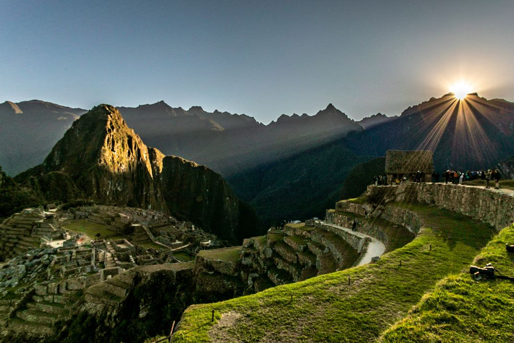
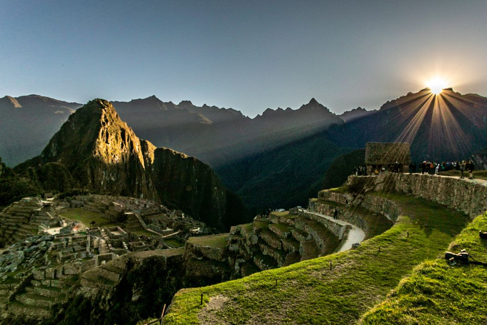

Explore the Wonders of Machu Picchu
Machu Picchu, an ancient Incan city, sits atop the Andes Mountains in Peru. It’s a UNESCO World Heritage site and is considered one of the Seven Wonders of the World.
The site is famous for its dry-stone construction and breathtaking views. It’s a perfect destination for travelers seeking history, adventure, and beauty.
Address: Machu Picchu, 08680, Peru

 
